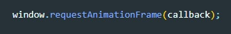

window.requestAnimationFrame указывает браузеру на то, что вы хотите произвести анимацию, и просит его запланировать перерисовку на следующем кадре анимации. В качестве параметра метод получает функцию, которая будет вызвана перед перерисовкой.
ВАЖНО! Ваш callback метод сам должен вызвать requestAnimationFrame() иначе анимация остановится.
Синтаксис
callback - Функция, которая будет вызвана, когда придёт время обновить вашу анимацию на следующей перерисовке
element - Необязательный параметр (не используется в Firefox или IE), определяющий элемент, который визуально содержит всю анимацию.
requestID — длинное целое, являющееся уникальным идентификатором для записи, содержащей callback. Оно не равно нулю, но других предположений о его значении делать не следует. Вы можете передать его в window.cancelAnimationFrame() для отмены вызова.